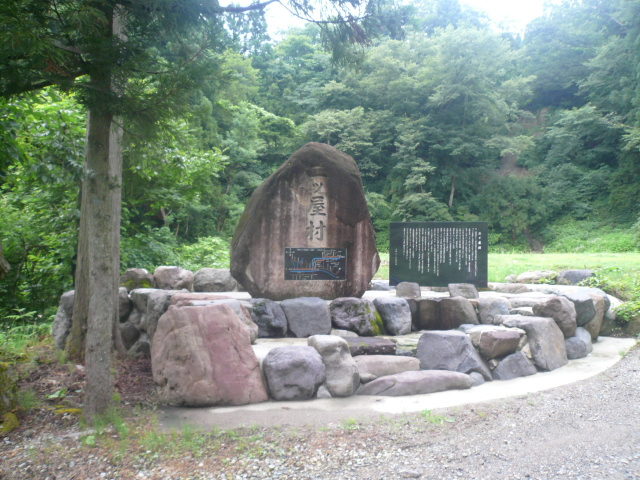
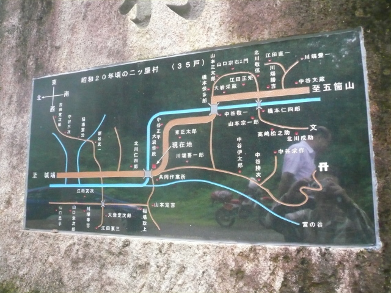

富山県南砺市（旧城端町）上田
- 2013.01.20 Sunday
- 09:53
●26 上田（うえだ）
富山県南砺市（旧城端町） 【初訪】
平成23年夏、北陸方面6泊7日ツーリング、
7月28日（木、旅4日目）午後4時45分頃
刀利からは、福光郊外から城端郊外に抜けて、R.304旧道から2km入った廃村 上田を目指しました。

桂書房の「村の記憶」（平成7年刊）には「いますぐにでも住めそうな空き家が残る」（平成5年）と記されている上田ですが、訪ねてみると1戸の家も残っておらず、集落の中心部に「二ッ屋村」と刻まれた石碑が立っているのみ。それでも地域の方に出会えたのは幸いでした。
二ッ屋村は、明治12年までの古い村名です。

大鋸屋小学校上田分校は、へき地等級１級、児童数34名（S.34）、昭和48年閉校。
分校跡へ向かう橋は、失われていました。

上田、続く梨谷の探索は、平成6年の北海道の旅で知り合った、石川県在住、富山県在勤の友人（山崎さん）が付き合ってくれました。
17年の付合いにして、お会いしたのは9年半ぶり3回目。そんな付合いがあっても楽しいものですね(^_^)
山崎さんとはR.304の新道と旧道の分かれ目で、待ち合わせではなく、ほんと偶然落ち合うことができました。